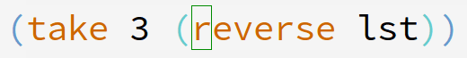
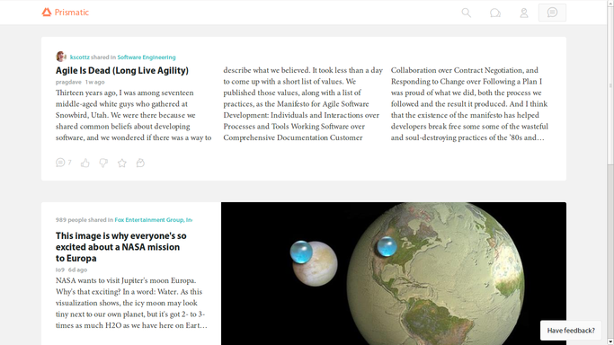
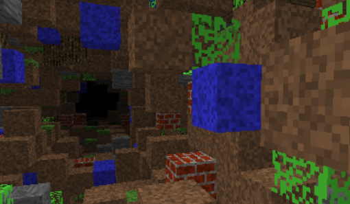
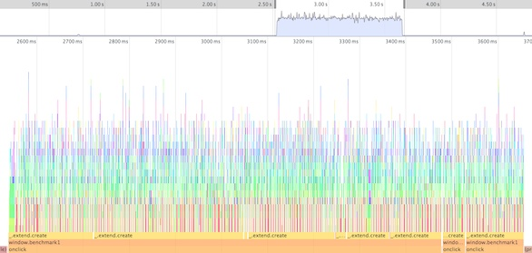
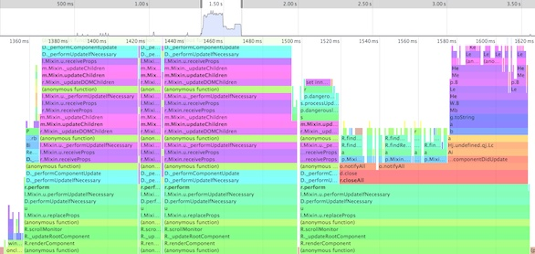

CLJS
client-side from the outer space
Dmitry Groshev @lambdadmitry
CLJS — наиболее зрелая альтернатива JS
План
- почему ClojureScript
- немного о CLJ/CLJS
- библиотеки
Почему ClojureScript
Главная претензия
Скобочки!!!
JS:
Foo.Bar = (function() {...
baz = _.map(..., function(){ ... });
})(...);
CLJS:
(map #(...) ...)
Скобочки!!!
Структурное редактирование
rainbow delimeters!
Скобочки!!!
Структурное выделение
Скобочки!!!
Структурное удаление
Скобочки!!!
LISP как JAVA: многократно приятнее с правильным редактором
скобочки вызывают зависимость
Not your mom's Coffee
- не просто сахар, свои абстракции
- большая стандартная библиотека
- объектная система и неймспейсы
- иммутабельные структуры
- ленивые последовательности
- оптимизирующий компилятор
- jQuery: 33k; CLJS hello world: 18k
Реальные проекты
not your mom's Elm
- Prismatic
- Weathertron
- гора молодых компаний (CodeNotes!)
Prismatic
Weathertron
Стоя на плечах гигантов
- JVM «под рукой»
- lein (Maven!)
- Google Closure
- JS interop (+source maps)
- фундамент (immutability, etc.)
Немного о CLJ/CLJS
История
- давным-давно: LISP
- Java и JVM
- Rich Hickey и Clojure
- JVM, CLR, py, …
- ClojureScript
CLJS гарантирован рост из-за CLJ
Clojure
- динамический
- компилируемый в рантайме
- есть eval
- объёмная реализация
ClojureScript
- динамический
- компилируемый не в рантайме
- нет eval
- относительно простая реализация
Макросы в CLJS
- выполняются при компиляции
- пишутся на CLJ(!)
- имеют доступ к JVM
Немного кода
(+ 1 2)
Типы, сахар
:foo
(list 1 2 3)
[1 2 3]
{:a 1, :b 2}
#{1 2 3}
#js [1 2 3]
#js {:a 1 :b 2}
~1-3x immutability overhead
Циклы, рекурсия
(map inc (for [q elements
p other-elements]
(+ q p)))
(loop [x 1]
(when (< x 10)
(prn x)
(recur (inc x))))
FizzBuzz
(defn fizzbuzz [x]
(cond (zero? (mod x 15)) "FizzBuzz"
(zero? (mod x 5)) "Buzz"
(zero? (mod x 3)) "Fizz"
:else x))
(doseq [x (range 1 101)]
(prn (fizzbuzz x)))
Прелестно!
FizzBuzz, compiled
function fd(a) {
return (0 === (a % 15 + 15) % 15 ? "FizzBuzz" :
0 === (a % 5 + 5) % 5 ? "Buzz" :
0 === (a % 3 + 3) % 3 ? "Fizz" : t ? a : null);
}
for (var gd = G(Yc.a(1, 101)), hd = null, id = 0, jd = 0;;) {
if (jd < id) {
var kd = hd.G(null, jd);
ed.j(N([fd(kd)], 0));
jd += 1;
} else {
...
}
};
Ещё о скорости
"Chambered" by David Nolen
~250LOC CLJS, 200–400LOC JS
Типы, протоколы, oh my!
(defrecord Puppies [...])
(defrecord Ukraine [...])
(defprotocol Likeable
(like [thing])
(hug [thing times]))
(extend-type Puppies
Likeable
(like [this] ...)
(hug [this times] ...))
(extend-protocol Likeable
Ukraine
(like [this] ...)
(hug [this times] ...))
Look ma, in my browser!
Библиотеки
Очевидное: stdlib
- десятки функция для Seq
- сеты/словари/строки/etc.
- моё любимое:
(->> (fetch "some_url")
(filter valid?)
(map #(assoc % :received (current-time)))
(into #{}))
Macro power: dommy
- Prismatic
- ~jQuery: селекторы и работа с DOM
- шаблоны с частичной компиляцией (2x jQuery)
- магия макросов:
(sel1 :body) ; => document.body (15x jQuery)
(sel1 :#my-id) ; => document.getElementById("my-id") (7x jQuery)
(sel ".c1, .c2") ; => «обычный» диспатч (~jQuery)
Macro power²: enfocus
Compile-time инлайнинг шаблонов:
(em/deftemplate template :compiled "/templates/template1.html" [some-data]
["#heading1"] (ef/content "fruit")
["thead tr > *:last-child"] (ef/content "quantity")
["tbody"] (ef/content (some-function some-data)))
core.typed:
SO I HEARD U LIKE TYPES
Clojure:
(ann my-weird-plus [Number -> String -> Number])
(defn my-weird-plus [a b]
(let [b-int (Integer/parseInt b)]
(+ a b)))
Опциональная runtime проверка типов! CLJS-порт в работе
core.match: если = мало
Снова FizzBuzz:
(doseq [n (range 1 101)]
(println
(match [(mod n 3) (mod n 5)]
[0 0] "FizzBuzz"
[0 _] "Fizz"
[_ 0] "Buzz"
:else n)))
Компилируется в эффективный код
просто core.async
{:on-message (fn [msg]
(go (>! first-chan
(decode msg))))}
...
(go
(>! final-chan
(+ (<! first-chan)
(<! second-chan))))
- каналы
- асинхронность
- абстракция «зелёного» треда
- количество коллбеков: 1
Om: вишенка на торте
- обёртка над React
- протоколы: лёгкое расширение
- core.async: общение между компонентами, границы
- иммутабельность: эффективный ререндеринг
- requestAnimationFrame и батчинг
- 2-4x Backbone на todoMVC
Backbone flamegraph
Om flamegraph
Quiz: что проще оптимизировать?
Заключение
ClojureScript:
- легко и приятно писать
- зрелая экосистема
- гарантированное будущее
- уникальные фичи и библиотеки
- сочетание мощности и скорости
- активное сообщество
ClojureScript — наиболее зрелая альтернатива JS
Используйте ClojureScript

Спасибо за внимание!
Слайды: si14.github.io/itlifeconf-2014-slides
Твиттер: @lambdadmitry
Почта: lambdadmitry@gmail.com